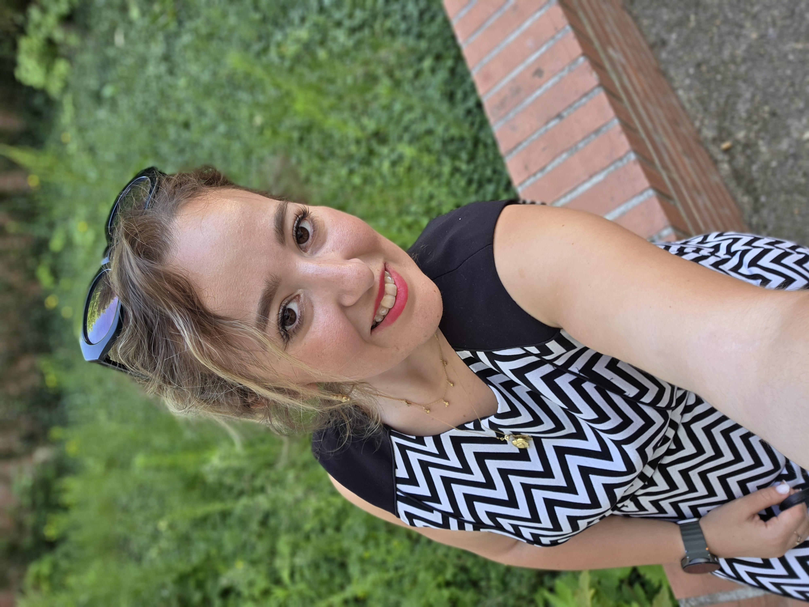

✦ Bonjour, je suis
Hanane Benmaghnia
Post-doctorante en informatique
LIP6, équipe PEQUAN · Sorbonne Université, Paris, France
À propos
Je suis actuellement post-doctorante au sein de l'équipe PEQUAN au LIP6 à Sorbonne Université, et je travaille sur le projet ANTIPASTI en collaboration avec le partenaire industriel Thalès. Mes travaux portent sur la validation numérique, la fiabilité des réseaux de neurones, les systèmes embarqués critiques, la synthèse de code, la précision numérique et les capteurs fibre optique acoustiques distribués (DAS), avec un intérêt particulier pour l'arithmétique des ordinateurs, le réglage de précision et le déploiement des réseaux de neurones sur des systèmes embarqués.
J'ai effectué ma thèse de doctorat au LAMPS à l'Université de Perpignan Via Domitia sur la Synthèse de Code Virgule Fixe pour les Réseaux de Neurones sous la direction de Matthieu Martel, Yassamine Seladji et Xavier Thirioux. J'ai rejoint par la suite le LSL au CEA-LIST (Commissariat à l'Energie Atomique et aux énergies alternatives) en tant qu'ingénieure R&D au sein de l'équipe FRAMA-C.
✧ Actualités
- Nov. 2026 Talk à l'Agence de l'Innovation Défense, Ministère des Armées & des Anciens Combattants, France.
- Oct. 2026 Talk au Miguel A. Loya College of Engineering à l'UTEP, El Paso, Texas, USA.
- Sept. 2026 Article accepté à ICECCS26.